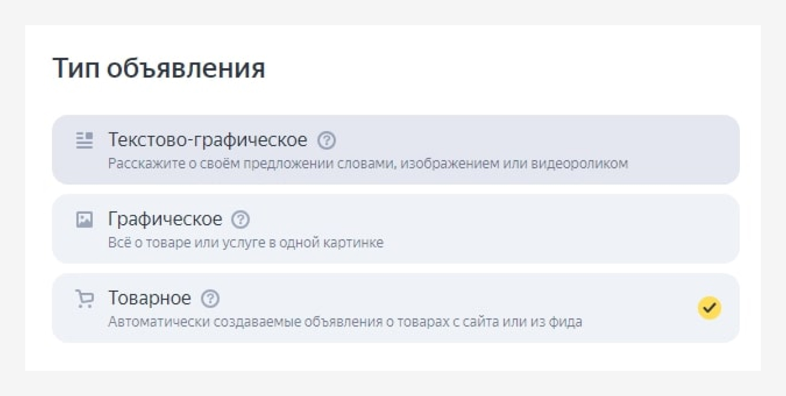

Как вести и продвигать соц сети (SMM) для медицинских клиник
256 просмторов
SMM

Медицинские клиники активно используют соцсети для привлечения и удержания пациентов, а также для повышения узнаваемости бренда. Специфика SMM для медицинских организаций требует особого подхода, так как здесь важно не только привлечь внимание аудитории, но и вызвать доверие к предоставляемым услугам.
В этой статье мы поделимся планом по развитию медицинского аккаунта, который будет основан не только на общих правилах, но и на личном опыте.
В этой статье мы поделимся планом по развитию медицинского аккаунта, который будет основан не только на общих правилах, но и на личном опыте.
Содержание
Виды контента
В ходе своей работы мы выделили основные виды контента, которые подходят аудитории медицинских клиник:
Продающий контент
Он включает как прямую, так и скрытую рекламу услуг клиники, предлагая возможность записи на прием или консультацию. Это могут быть объявления о доступных услугах, специальных программах, скидках и акциях.
Информационный контент
Содержит полезную информацию для пациентов, включая ответы на частые вопросы, советы по уходу за здоровьем и различные лайфхаки.
Имиджевый контент
Направлен на формирование и поддержание положительного имиджа, демонстрацию ценностей и достижений. Примеры могут включать вводные видео о клинике и ее сотрудниках, а также публикации, подчеркивающие социальную ответственность и вклад клиники в общество.
Подпись для фото первый вариант
Вконтакте
Эта платформа отличается широкими функциональными возможностями по навигации в профиле, поэтому здесь важно грамотное оформление:
- Шапка должна быть информативной — содержать логотип, описание клиники, ее преимущества и, конечно, контактную информацию.
- Меню облегчает навигацию по разделам, таким как услуги, товары, обсуждения и отзывы.
- Закрепленные посты и сюжеты предоставляют быстрый доступ к актуальной информации и специальным предложениям.
Следующий ключевой фактор к вовлечению аудитории — разнообразие контента. Используйте доступные форматы: от обучающих видео и клипов до постов с полезной информацией и историями от врачей. Активное вовлечение аудитории можно обеспечить через опросы, вывод аудитории на диалог в комментариях.
Таким образом, для повышения вовлеченности аудитории и укрепления связи с нашими подписчиками, мы выделили несколько стратегий, ориентированных на интерактив и пользу:
- Ежемесячные акции. Организация регулярных акций способствует созданию оживления среди подписчиков за счет их временной ограниченности. Это не только привлекает внимание к разнообразным и выгодным предложениям, но и стимулирует быстрое принятие решения.
- Рубрика “Вопрос-Ответ” с участием наших врачей. Этот формат позволяет подробно разбирать актуальные и волнующие пациентов вопросы. Подобное взаимодействие способствует формированию доверия к клинике.
- Интерактивные рубрики с опросами. Одни из основных это “Правда или миф” и “Факт дня”. Такие опросы увеличивают вовлеченность, побуждая подписчиков активно участвовать в жизни аккаунта.
- Розыгрыши и конкурсы — мощный инструмент для привлечения внимания к аккаунту. Они не только способствуют повышению вовлеченности аудитории, но и ее увеличению.
Несмотря на ограничения, Нельзяграм продолжает быть популярной платформой для взаимодействия с пациентами.
Подача контента и аудитория на этой платформе во многом схожа с Вконтакте, поэтому можете с уверенностью включить кросспостинг — такой подход позволяет оптимизировать время и ресурсы, одновременно поддерживая актуальность информации для широкой аудитории.
Однако Нельзяграм имеет и свои особенности, которые отличают его от других социальных сетей, особенно это касается визуальной составляющей аккаунта.
Эта социальная сеть предоставляет возможность акцентировать внимание на качественных фото и видео. Именно поэтому важно уделить особое внимание визуалу аккаунта, логотипу и обложкам актуальных.
Кросспостинг — такой подход позволяет оптимизировать время и ресурсы, одновременно поддерживая актуальность информации для широкой аудитории
На что здесь следует обратить внимание:
- Шапка профиля. Она должна кратко и емко передавать основную информацию о клинике и призывать к конкретному действию, например, запись на прием.
- Визуальное оформление. Фотографии и видео должны быть высокого качества, эстетичными и передавать атмосферу клиники. Обложки для рилс нужно также подбирать, чтобы они соответствовали общему стилю аккаунта.
Кроме того, необходимо учитывать, что Нельзяграм, в отличие от Вконтакте, предполагает более активное использование хештегов для улучшения видимости публикаций и привлечения новых подписчиков.
Кроме того, необходимо учитывать, что Нельзяграм, в отличие от Вконтакте, предполагает более активное использование хештегов
Важно помнить, что успех в SMM для медицинских клиник не приходит мгновенно. Это долгосрочная стратегия, требующая постоянства, креативности и готовности адаптироваться к меняющимся трендам и предпочтениям аудитории. Создавая качественный и полезный контент, можно не только привлечь новых пациентов, но и построить долгосрочные отношения с существующей аудиторией.
| Заголовок для таблицы Название столбика | Заголовок для таблицы Название столбика | Заголовок для таблицы Название столбика | Заголовок для таблицы Название столбика |
|---|---|---|---|
| Важно помнить, что успех в SMM для медицинских клиник не приходит мгновенно. Это долгосрочная стратегия, требующая постоянства, креативности и готовности адаптироваться к меняющимся трендам. | Важно помнить, что успех в SMM для медицинских клиник не приходит мгновенно. | Важно помнить, что успех в SMM для медицинских клиник не приходит мгновенно. | Важно помнить, что успех в SMM для медицинских клиник не приходит мгновенно. |
| Важно помнить, что успех в SMM для медицинских клиник не приходит мгновенно. | Важно помнить, что успех в SMM для медицинских клиник не приходит мгновенно. Это долгосрочная стратегия, требующая постоянства, креативности и готовности адаптироваться к меняющимся трендам. | Важно помнить, что успех в SMM для медицинских клиник не приходит мгновенно. | Важно помнить, что успех в SMM для медицинских клиник не приходит мгновенно. |
| Важно помнить, что успех в SMM для медицинских клиник не приходит мгновенно. | Важно помнить, что успех в SMM для медицинских клиник не приходит мгновенно. | Важно помнить, что успех в SMM для медицинских клиник не приходит мгновенно. Это долгосрочная стратегия, требующая постоянства, креативности и готовности адаптироваться к меняющимся трендам. | Важно помнить, что успех в SMM для медицинских клиник не приходит мгновенно. |
| Важно помнить, что успех в SMM для медицинских клиник не приходит мгновенно. | Важно помнить, что успех в SMM для медицинских клиник не приходит мгновенно. | Важно помнить, что успех в SMM для медицинских клиник не приходит мгновенно. | Важно помнить, что успех в SMM для медицинских клиник не приходит мгновенно. Это долгосрочная стратегия, требующая постоянства, креативности и готовности адаптироваться к меняющимся трендам. |